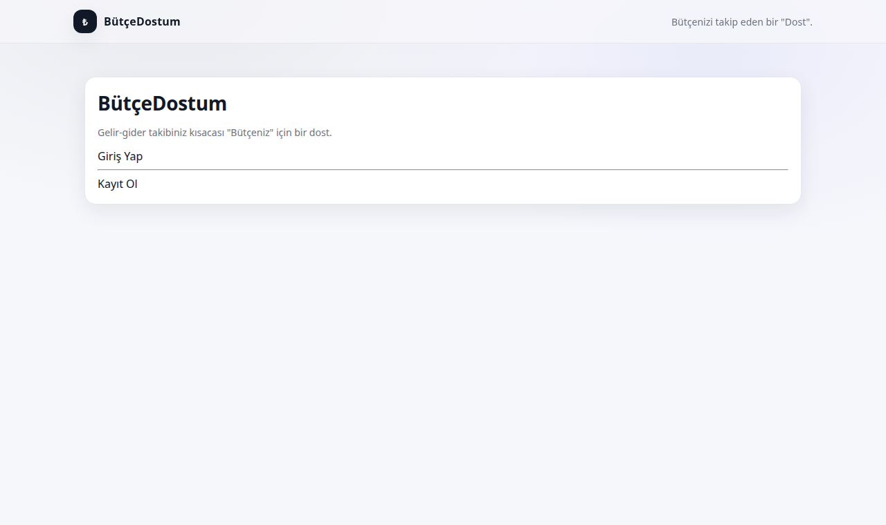
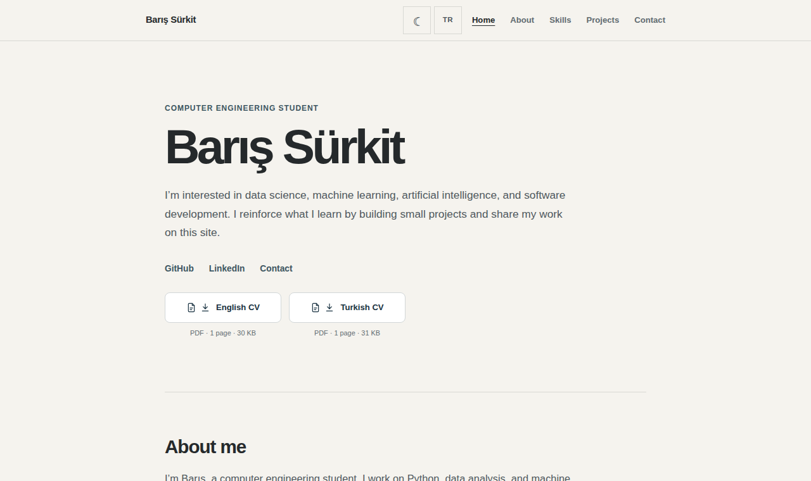

FEATURED / AI RESEARCH
AI Search Engine
A citation-aware research workspace combining live web search, selected-document retrieval, and hybrid RAG.
SELECTED WORK
A focused collection of work across AI research, full-stack development, and the web.
FEATURED / AI RESEARCH
A citation-aware research workspace combining live web search, selected-document retrieval, and hybrid RAG.

WEB APPLICATION
A full-stack personal budget tracker built with Next.js, TypeScript, Prisma, and SQLite.
Source code ↗
WEB DESIGN & DEVELOPMENT
An accessible, bilingual portfolio designed to put projects and engineering work first.
Source code ↗